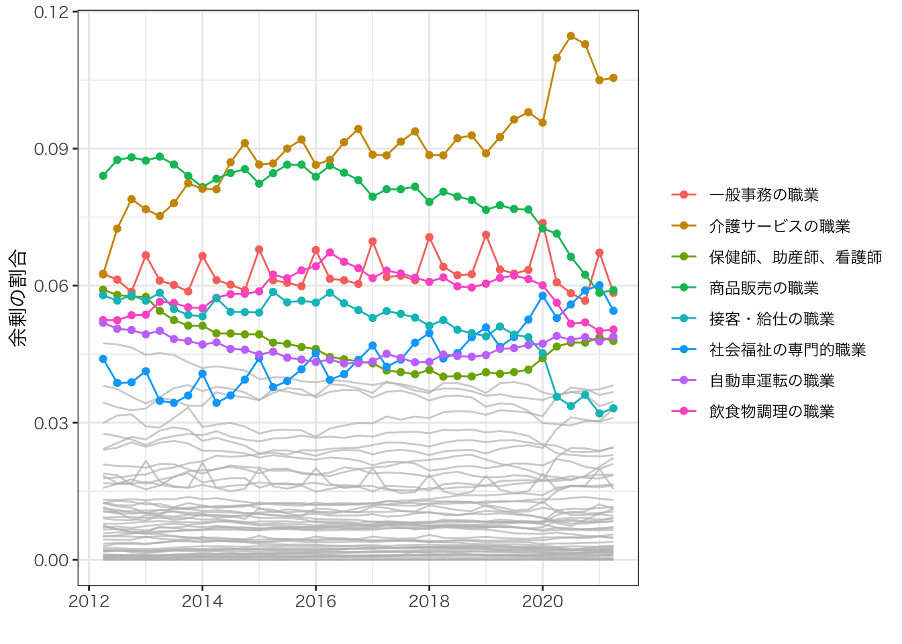

Chapter 3 厚生分析:時系列比較
1963年から2021年6月までの年次データ、Kawata and Sato (2021) の手法を用いて、求職者の厚生変化を記述する
- 引き続き四半期ごとに集計する
3.1 方法
同質な求職者・求人からなるモデルを用いて、定常状態における厚生変化の識別方法を紹介する。
- Kawata and Sato (2021) では異質性を導入し・非定常状態であったとしても、同じ結果を得れることを示している。
標準的なDiamond-Mortencen-Pissarides型サーチモデル(Rogerson, Shimer, and Wright 2005)に準じて、以下の4条件式を仮定する
- 失業者の価値関数は以下で定義される。
\[rU=b+\underbrace{\Delta}_{サーチ活動の余剰}\]
ただし
\[\Delta = \underbrace{\frac{m}{u}}_{入職率}\times \underbrace{(W-U)}_{入職からの余剰}\]
\(m:\) 新規就職件数、\(u:\)求職者数、\(U:\)求職者の期待効用、\(W:\)就業者の期待効用、\(r,b:\) パラメータ
サーチ活動の余剰をデータから識別することを目指す。
同値はサーチ活動がもたらす期待余剰であり、入職率と入職がもたらす余剰\(W-U\)の積として定義される。
識別の障害となるのは、入職からの余剰をデータから直接観察できない点にある。以下では他の均衡条件を用いることで、この観察できない値の”変化”は復元できることを示している。
- 求人の価値関数は以下で定義される。
\[rV=-k+\frac{m}{v}\times (J-V)\]
\(v:\) 求人数、\(m/v:\) 求人の充足率、\(J:\) 充足求人の期待利潤、\(V:\) 未充足求人の期待利潤、\(k:\) パラメータ
- 自由参入条件は以下で定義される。
\[V=0\]
- この条件は、未充足求人の期待利潤が0になるまで、新規求人が登録されることを仮定している。
- ナッシュ交渉
\[(1-\beta)(W-U)=\beta(J-V)\]
\(\beta:\) パラメータ
- この条件は、マッチングによる余剰が、労働者と企業間でパラメータ\(\beta\)の割合で分配されることを仮定している。同パラメータをデータから推定することは困難であるが、以下の議論は、入職からの期待余剰\(\Delta\)の”変化”の識別は、\(\beta\)の識別を要求しないことを示している。
3.1.1 識別
- ナッシュ交渉より、入職からの余剰は以下のように書き換えられる。
\[\Delta = \underbrace{\frac{m}{u}}_{入職率}\times \underbrace{(W-U)}_{入職からの余剰}=\underbrace{\frac{m}{u}}_{入職率}\times \underbrace{\frac{\beta}{1-\beta}(J-V)}_{入職からの余剰}\]
- 自由参入条件からさらに書き換えられる
\[\Delta = \underbrace{\frac{m}{u}}_{入職率}\times \underbrace{(W-U)}_{入職からの余剰}=\underbrace{\frac{m}{u}}_{入職率}\times \underbrace{\frac{\beta}{1-\beta}k\times\frac{v}{m}}_{入職からの余剰}\]
同式からは、新規就職、求人、求職件数とパラメータの積により、新規就職からの余剰は書き下せる ことを示している。
未知のパラメータ(\(\beta\),\(k\))を含んでいるため\(\Delta\)そのものをデータから識別することはできない。 他方変化率は、未知のパラメータを推定せずに、識別できる。
異なる状態（2019年 VS 2020年, “With COVID-19” VS “Without COVID-19”等）におけるサーチ活動からの余剰を\(\Delta,\Delta'\)で記す。 状態が異なっても\(¥beta\),\(k\)は変化しないとすると、サーチ活動からの余剰の変化率は
\[\frac{\Delta - \Delta'}{\Delta'}=\frac{\frac{m}{u}(W-U)-\frac{m'}{u'}(W'-U')}{\frac{m'}{u'}(W'-U')}\]
\[=\frac{1}{\frac{m'}{u'}(W'-U')}[\underbrace{\frac{m}{u}(W-U-(W'-U'))}_{マッチからの余剰の貢献}+\underbrace{(\frac{m}{u}-\frac{m'}{u'})(W'-U')}_{入職率の貢献}]\]
\[=\frac{u'}{v'}[\underbrace{\frac{m}{u}(\frac{v}{m}-\frac{v'}{m'})}_{マッチからの余剰の貢献}+\underbrace{\frac{v'}{m'}(\frac{m}{u}-\frac{m'}{u'})}_{入職率の貢献}]\]
\[=\underbrace{\frac{u'}{v'}[\frac{v}{u}-\frac{v'}{u'}]}_{サーチ活動からの余剰}\]
同式から総余剰は、求人倍率\(v/u\)の変化率により識別されることを示している。
さらにサーチ活動からの総余剰は入職率、入職からの余剰の対数変化に分解でき、それぞれも新規就職・求人・求職件数のみで識別できることを示している。
これらは職業紹介業務統計において継続的に報告されており、公開データのみを用いて、求職活動の厚生評価を行う事ができる。
3.1.2 時系列比較への応用
以下では前年同月と比べたサーチ活動からの余剰変化を推定している。
例えば2020年4月については、\(\Delta=\) 2020年4月の余剰、\(\Delta'=\) 2019年4月の余剰を示す。
同推定値は、前年に比べて求職者が置かれている状況が、どの程度改善ないし悪化しているのかを示す指標となる。
3.2 Rコード
pacman::p_load("tidyverse",
"readxl",
"lubridate")col.label <-
c("year",
"1",
"2",
"3",
"4",
"5",
"6",
"7",
"8",
"9",
"10",
"11",
"12",
"type",
"group")
select.raw <- 14:63
select.column <- c(1,3:14)
raw.vacancy.full <-
read_excel("data/第6表.xlsx",
sheet = "第６表ー２（パート除く）") %>%
.[select.raw,select.column] |>
mutate(type = "求人",
group = "フルタイム")
colnames(raw.vacancy.full) <- col.label
raw.seeker.full <-
read_excel("data/第7表.xlsx",
sheet = "第７表ー２（パート除く）") %>%
.[select.raw,select.column] |>
mutate(type = "求職",
group = "フルタイム")
colnames(raw.seeker.full) <- col.label
raw.hir.full <-
read_excel("data/第8表.xlsx",
sheet = "第８表ー２（パート除く）") %>%
.[select.raw,select.column] |>
mutate(type = "新規就職",
group = "フルタイム")
colnames(raw.hir.full) <- col.label
raw.vacancy.part <-
read_excel("data/第6表.xlsx",
sheet = "第６表ー３（パート）") %>%
.[select.raw,select.column] |>
mutate(type = "求人",
group = "パートタイム")
colnames(raw.vacancy.part) <- col.label
raw.seeker.part <-
read_excel("data/第7表.xlsx",
sheet = "第７表ー３（パート）") %>%
.[select.raw,select.column] |>
mutate(type = "求職",
group = "パートタイム")
colnames(raw.seeker.part) <- col.label
raw.hir.part <-
read_excel("data/第8表.xlsx",
sheet = "第８表ー３（パート）") %>%
.[select.raw,select.column] |>
mutate(type = "新規就職",
group = "パートタイム")
colnames(raw.hir.part) <- col.label
df <-
rbind(raw.hir.full,
raw.hir.part,
raw.vacancy.full,
raw.vacancy.part,
raw.seeker.full,
raw.seeker.part
) |>
pivot_longer(cols = 2:13,
names_to = "month",
values_to = "n") |>
mutate(n = n |> as.numeric(),
year = year |> str_sub(1,4) |> as.numeric(),
month = month |> as.numeric(),
quaterly = month |> cut(c(0,3,6,9,12), labels = c(1,2,3,4)),
date = yq(str_c(year,quaterly,sep = ":Q"))
) |>
group_by(date,type) |>
mutate(n = n |> sum()) |>
ungroup() |>
distinct(year,quaterly,date,type,n) |>
spread(key = type, value = n) |>
group_by(quaterly) |>
mutate(サーチ活動からの余剰 = (lag(求職)/lag(求人))*((求人/求職) - (lag(求人)/lag(求職))),
入職率 = (lag(求職)/lag(求人))*(lag(求人)/lag(新規就職))*((新規就職/求職) - (lag(新規就職)/lag(求職))),
入職からの余剰 = (lag(求職)/lag(求人))*(新規就職/求職)*((求人/新規就職) - (lag(求人)/lag(新規就職)))
) |>
ungroup() |>
select(-求職,
-求人,
-新規就職) |>
pivot_longer(cols = c(4:6),
names_to = "type",
values_to = "N") |>
na.omit()fig <-
df |>
ggplot(aes(x = date,
y = N)
) +
geom_line() +
geom_hline(yintercept = 0) +
facet_wrap(~factor(type,
levels = c("入職からの余剰",
"入職率",
"サーチ活動からの余剰")),
ncol = 1) +
ylab("") +
xlab("") +
theme_bw(base_family = "HiraKakuPro-W3")3.3 結果

サーチ活動からの余剰、入職率、入職からの余剰は、すべて景気変動と正循環していることが確認できる。
COVID-19がもたらしたサーチ活動からの余剰への影響を他の経済ショックと比べた場合、平成不況と同程度の水準である。
COVID-19の影響は、2020年第2・3四半期については、入職率の低下により生じている。これは、入職からの余剰低下の影響も大きい、他の経済ショックとは大きく異なっている。
入職率への影響は2021年第2四半期期において下げ止まりの傾向を見せているが、入職からの余剰は2020年第2四半期と比べても低下している。
3.4 環境
sessionInfo()## R version 4.1.1 (2021-08-10)
## Platform: aarch64-apple-darwin20 (64-bit)
## Running under: macOS Big Sur 11.2.2
##
## Matrix products: default
## BLAS: /Library/Frameworks/R.framework/Versions/4.1-arm64/Resources/lib/libRblas.0.dylib
## LAPACK: /Library/Frameworks/R.framework/Versions/4.1-arm64/Resources/lib/libRlapack.dylib
##
## locale:
## [1] en_US.UTF-8/en_US.UTF-8/en_US.UTF-8/C/en_US.UTF-8/en_US.UTF-8
##
## attached base packages:
## [1] stats graphics grDevices utils datasets methods base
##
## other attached packages:
## [1] lubridate_1.7.10 readxl_1.3.1 forcats_0.5.1 stringr_1.4.0
## [5] dplyr_1.0.7 purrr_0.3.4 readr_2.0.1 tidyr_1.1.3
## [9] tibble_3.1.3 ggplot2_3.3.5 tidyverse_1.3.1
##
## loaded via a namespace (and not attached):
## [1] tidyselect_1.1.1 xfun_0.25 haven_2.4.3 colorspace_2.0-2
## [5] vctrs_0.3.8 generics_0.1.0 htmltools_0.5.1.1 yaml_2.2.1
## [9] utf8_1.2.2 rlang_0.4.11 jquerylib_0.1.4 pillar_1.6.2
## [13] withr_2.4.2 glue_1.4.2 DBI_1.1.1 dbplyr_2.1.1
## [17] modelr_0.1.8 lifecycle_1.0.0 munsell_0.5.0 gtable_0.3.0
## [21] cellranger_1.1.0 rvest_1.0.1 evaluate_0.14 labeling_0.4.2
## [25] knitr_1.33 tzdb_0.1.2 fansi_0.5.0 highr_0.9
## [29] broom_0.7.9 Rcpp_1.0.7 backports_1.2.1 scales_1.1.1
## [33] jsonlite_1.7.2 farver_2.1.0 fs_1.5.0 hms_1.1.0
## [37] digest_0.6.27 stringi_1.7.3 bookdown_0.23 grid_4.1.1
## [41] cli_3.0.1 tools_4.1.1 magrittr_2.0.1 pacman_0.5.1
## [45] crayon_1.4.1 pkgconfig_2.0.3 ellipsis_0.3.2 xml2_1.3.2
## [49] reprex_2.0.1 assertthat_0.2.1 rmarkdown_2.10 httr_1.4.2
## [53] rstudioapi_0.13 R6_2.5.1 compiler_4.1.1